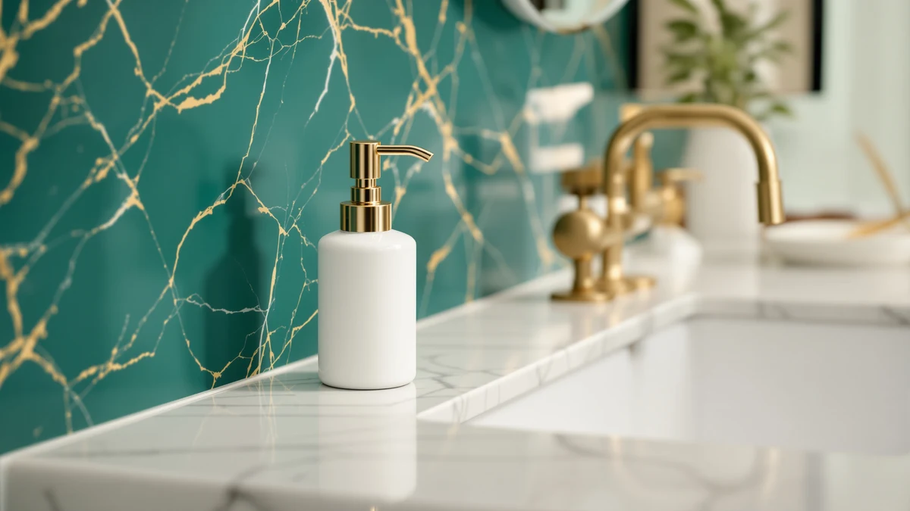

How to Choose Soap Dispenser Pump (2026)
Prices and picks verified as of August 2026. Independent, reader-supported reviews.


Things to Know Before You Buy
- Most US bottles use a 28mm or 24mm threaded neck, labeled 28/400 or 24/410, and matching that code matters more than matching the brand.
- Foaming pumps use a fine mesh screen that clogs fast if you run full-strength liquid soap through it instead of diluted soap.
- Pump output ranges from about 0.5ml to 4ml per stroke, so matching your old pump's output keeps your routine the same.
- Test a new pump with plain water before you fill it with soap. A leak at the collar means the thread size is off.
- A replacement pump costs about $8, far less than replacing the whole dispenser when only the pump has failed.
Knowing how to choose soap dispenser pump replacements saves you from throwing out a good bottle just because the mechanism inside it seized up, cracked, or started leaking down the side of the sink.
This guide walks through five checks in order: measuring your bottle, matching the thread type, picking a pump style suited to your soap, confirming the output volume, and testing the new pump with water before you trust it with real soap. Follow them in sequence and you get a pump that seals tight, primes fast, and does not leave a puddle on the counter.
What You'll Need
- Supplies: a replacement soap dispenser pump, water for testing, and a paper towel
- Tools: a tape measure or ruler and a small measuring spoon
Step 1: Measure your bottle's neck opening and tube length
The first move when you choose soap dispenser pump replacements is measuring, not shopping. Unscrew the old pump and measure the neck opening across the widest point of the threaded collar. Most kitchen and bathroom bottles use a 28mm or 24mm neck, though smaller lotion-style bottles sometimes run 20mm, and a pump that is even a millimeter off will not seat tight enough to seal.
Next, measure the tube length from the bottom of the pump collar to the tip of the dip tube, the thin plastic straw that reaches down into the liquid. Stand the empty bottle upright, drop the old tube in alongside a tape measure, and record the distance in both inches and millimeters, since online listings mix the two. If the tube runs even half an inch short, the pump will draw air before the bottle is empty, so buy a pump with a tube you can trim rather than one that is already too short.
Write both numbers down before you start browsing. A pump that fits the neck but has the wrong tube length is still a pump you will end up returning, and matching both dimensions on the first try is the difference between a five-minute swap and a second trip to the store.
Step 2: Match the thread type
Bottle necks use one of two fittings: a threaded screw cap or a snap-fit collar that clicks over a lip. Screw threads are far more common on soap and lotion bottles sold in the US, and most replacement pumps are built for that style. Run your finger around the inside of the old collar. If you feel spiraled ridges, you have threads; if the inside is smooth with a small ridge near the top, you have a snap fit.
Threaded pumps come in a handful of standard sizes, most often labeled 28/400 or 24/410, where the first number is the neck diameter in millimeters and the second describes the thread pitch. That code is usually printed on the packaging or listed in the product description, and matching it exactly matters more than matching the brand of your old dispenser. Two bottles from different companies can share the same 28/400 thread and take the same pump.
Snap-fit pumps are harder to source since they vary more by manufacturer, so if your bottle uses one, check whether the original brand sells replacement parts directly. When in doubt, buy a threaded pump and a cheap bottle with a matching neck rather than forcing a mismatched fit, since a pump that does not thread down flush will leak at the collar no matter how tight you turn it.
Step 3: Pick a pump style for your liquid
Not every pump moves liquid the same way, and this is where most people choosing a soap dispenser pump go wrong. A standard liquid pump pushes soap straight through the nozzle in one stream, which works for thin dish soap and hand soap. A foaming pump mixes air into the liquid as it travels through a small screen, which is why foaming refills need to be diluted with water. Running full-strength soap through a foaming pump usually clogs it within a week.
Lotion and thick-liquid pumps use a wider bore and a stiffer spring to push viscous formulas without straining the mechanism. If you currently own a foaming dispenser and want to switch to plain liquid soap, do not just swap the soap. Buy a standard pump too, because forcing thick liquid through a foaming pump's fine mesh screen clogs it fast and undoes the whole point of choosing a new pump in the first place.
Check the listing for the pump's intended use before you buy. Sellers usually label the style clearly as foaming, lotion, or standard liquid, and a pump built for the wrong viscosity either sputters out too little product or floods the counter with more than you wanted.
Step 4: Check the output volume per pump
Pump output ranges from about 0.5ml on small travel pumps to 4ml or more on full-size kitchen dispensers, and that number is usually buried in the fine print of the product listing. A pump with too little output means pressing the plunger three or four times to wash your hands once, and a pump with too much wastes soap and leaves a puddle in the dish.
If you do not know your old pump's output, do a quick test before it fails completely: press it once into a measuring spoon and see how much lands there. Aim for a replacement within half a milliliter of that figure, since a close match keeps your routine the same and your soap bottle lasting as long as it used to.
Step 5: Test the pump for smooth action and leaks
Before you fill the bottle with soap, test the new pump with plain water. Screw it onto the bottle, add a few inches of water, and press the plunger ten or twelve times. The first few strokes may pull up air, which is normal, but by the fifth or sixth stroke you should get a steady, even stream with consistent resistance on the plunger.
Watch the collar while you pump. A drip forming around the threads means the pump does not match the neck size as well as you thought, even if it screwed on without trouble. Tighten the collar a quarter turn and test again. If the leak continues, the thread size is off and you need a different pump rather than a tighter grip.
Once the pump primes cleanly and seals without dripping, empty the water, dry the bottle, and fill it with your actual soap. A pump that passes the water test rarely causes problems later, and running this check before your first real use catches a bad fit while returning it is still easy.
Common Mistakes to Avoid
The most common mistake is guessing at the neck size instead of measuring it. A pump that looks close enough on the shelf often turns out to be a millimeter narrow or wide, and that small gap is enough to make the collar leak or spin loosely instead of biting down. Measure first, every time you choose a soap dispenser pump.
Buying based on brand instead of thread code is another frequent slip. People assume a pump from the same brand as their old dispenser will fit, but many brands use generic 28/400 or 24/410 threads shared across dozens of manufacturers. The thread code matters more than the label on the box.
Skipping the water test trips up a lot of people too. It takes two minutes and catches a bad seal or a weak spring before you have committed soap to a pump that will not last. Do it before you fill the bottle for real, not after you notice a puddle three days later.
Forcing a foaming pump to handle thick, unfoamed soap is another habit worth breaking. The fine mesh screen inside a foaming pump clogs fast when it meets full-strength liquid, and once it clogs, cleaning it out is more work than buying the correct pump would have been.
Finally, do not overtighten a pump that will not seal. Cranking down harder on a mismatched collar usually cracks the plastic threads rather than fixing the leak, and at that point you need a new pump regardless.
Our Top Picks
If your old pump is not worth saving, these three dispensers are easy to source replacement parts for and hold up well over daily use. We picked one for most kitchens and bathrooms, one that offers the most for the price, and one with a larger reservoir for households that go through soap fast.

Editor's Pick
FE Soap Dispenser 300ml/10oz Ceramic
The ceramic body resists cracking better than plastic, and the pump has a smooth, consistent stroke that primes fast after a refill. A solid default if you want a dispenser that looks good on the counter and will not need a pump replacement anytime soon.
$11.69
Check Price on Amazon
Best Value
Cormomu Dish Soap Dispenser Set
Under $17 and sold as a two-piece set, this option costs less per dispenser than buying pumps separately, and the pump handles both thin dish soap and thicker hand soap without clogging. Pick this if you want two working dispensers without the fuss of matching a pump to an old bottle.
$16.59
Check Price on Amazon
Premium Choice
Natheeph 14OZ Soap Dispenser for
At 14 ounces, this dispenser holds noticeably more than the standard 10-ounce bottle, so it needs refilling less often in a busy kitchen. The larger reservoir means the pump's dip tube runs longer too, worth checking if you ever need a standalone replacement pump for it.
$17.88
Check Price on AmazonFrequently Asked Questions
What size pump fits most soap dispensers?
Most kitchen and bathroom bottles in the US use a 28mm neck opening, labeled 28/400 on packaging, which fits the majority of standard soap and lotion pumps sold online. Measure your bottle's neck before buying, since smaller travel bottles and some lotion bottles run 24mm or 20mm instead.
Can you use any pump on any soap bottle?
No. The pump's collar has to match your bottle's neck diameter and thread pitch, or it will not seal and will leak around the base. A pump that screws on without resistance but still drips usually has the right diameter but the wrong thread pitch, so check the full thread code, not just whether it physically fits.
How do you know if you need a foaming or standard pump?
If your dispenser currently produces foam, it uses a foaming pump with a fine mesh screen, and you need a matching replacement rather than a standard pump. Switching a foaming bottle to full-strength liquid soap without changing the pump clogs the mesh screen within days, since it was never built to handle undiluted liquid.
Why does a new soap dispenser pump leak at the base?
A leaking collar almost always means the thread size is slightly off, even when the pump screws on without much resistance. Tighten it a quarter turn and test with water first. If it still drips, the neck diameter or thread pitch does not match, and you need a different pump rather than a tighter seal.
Can you shorten a soap dispenser pump's tube?
Yes. Most dip tubes are flexible plastic that you can trim with scissors to fit a shorter or narrower bottle, so when you are unsure between two tube lengths, buy the longer pump and cut it down rather than choosing one that might come up short. A tube that ends too high in the bottle wastes soap and starts drawing air well before the bottle is empty.
Verdict
Learning how to choose soap dispenser pump replacements comes down to five checks: measure the neck and tube, match the thread type, pick a pump style suited to your liquid, confirm the output volume, and test with water before you trust it with real soap. Skip the guesswork and you avoid the two most common failures, a collar that leaks because the thread size was off and a pump that clogs because it was built for the wrong viscosity.
If you are replacing the whole dispenser rather than hunting for a compatible pump, the FUN ELEMENTS ceramic dispenser is our top pick. Its pump has a smooth, consistent stroke straight out of the box, and the ceramic body holds up better than plastic over years of daily use. Whichever route you take, measuring first and testing before you commit saves you a return trip and gets your sink back in working order the same day.